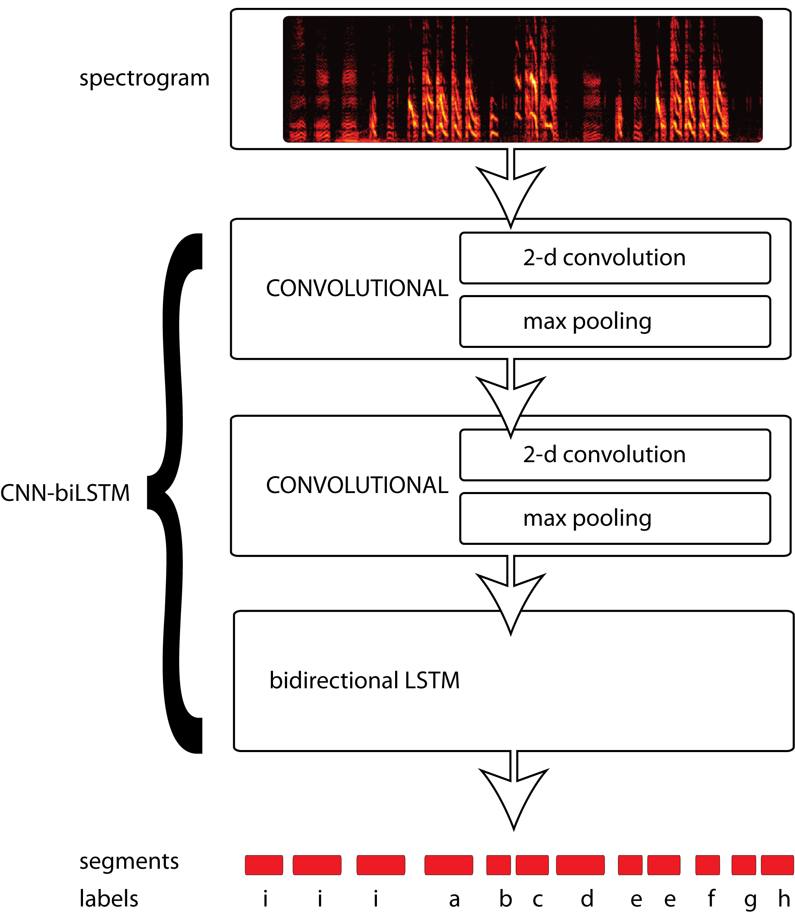

Introduction
In November, Yarden Cohen and I gave a talk at PyData NYC
about segmenting vocalizations with neural networks.
More specifically, we are segmenting birdsong
into elements called syllables,
although in principle the same thing can be done with human speech.
That is a harder problem, though, because in human speech
the beginning and end of a syllable is not as clearly defined
as it is in birdsong. Because the song of many bird species is more easily
segmented into syllables, we proposed that birdsong could provide a test bed for
benchmarking different neural net models for segmentation.
We have some scientific questions about birdsong that we are using the neural
network to answer. I won't go into the details of that here, but I thought it
might be interesting for people to see the process we're going through to make
sure the network does what we want it to. I find a lot of tutorials on the web
that walk users through applying an established architecture to a toy problem,
but not a lot of writing about the process of developing a neural network for a
specific real-world application. So here's a sneak peek at the results I've been
sending to Yarden. Full disclosure: I'm also applying for the
Google AI Residency and want to demonstrate what I've been working on.
We are bravely coding in the open. If you want to see the code I've
developed, with scripts for creating learning curves like those shown below,
you can check out my fork of Yarden's code:
https://github.com/NickleDave/tf_syllable_segmentation_annotation
If you are a songbird researcher and you'd like to try out the
network on your own data, you might prefer to work with the Jupyter
notebook that Yarden originally shared:
https://github.com/yardencsGitHub/tf_syllable_segmentation_annotation
the goal: segment birdsong into syllables
As I said, we are trying to segment birdsong into syllables.
Let's look at some examples to see what I mean.
Below are spectrograms of four songs from four birds, taken from an
open repository of Bengalese finch song
shared by the lab that I work in,
the Sober lab.
If you haven't seen a spectrogram before, it is (in this context)
just an image of audio, with frequencies on the Y axis and time on the X axis.
Notice that each bird has a handful of repeating elements in its song
that we call syllables. Often when we want to study a bird's song, we
name these elements by giving them labels. The labels are arbitrary,
by which I mean that just because one syllable is labeled 'a' for bird 1
does not mean that it resembles syllable 'a' from bird 2.
All these birds are from the same species but each individual has its own song.
(Typically a bird's adult song resembles the song of the tutor
that it learned from as a juvenile.) We want our neural network
to generalize across birds. I do not put a number here to how well
the network generalizes in this sense, across individuals, but I will
point out that a lot of work has been done to derive metrics for how
similar songs are within and across birds. To my knowledge, this has not
been done for human speech, and no work has been done measuring how well
neural networks for speech recognition generalize across speakers.


how birdsong is typically segmented
Typically, scientists that study birdsong segment it into syllables with a simple algorithm:
- measure the amplitude of the sound (as plotted below, in the axis under the spectrogram)

- set a threshold and find all time points at which the amplitude is above that threshold.
Call each continuous series of time points above threshold a syllable segment
(pink lines below); each series below the threshold is a silent period segment

- set a minimum silent period duration; if the duration of any silent period segments are
less than that minimum, they are removed and the two syllable segments that were on either
side of it are joined (red lines below).

- set a minimum syllable duration, if any syllable segments are less than that minimum,
they are discarded. The remaining syllable segments (dark red lines below)
are then given labels.

For many species of songbird, this algorithm works fine.
But if there is background noise, this algorithm can fail--e.g. when recording
birds in the wild or when there are other sounds present during a behavioral experiment.
This algorithm also won't work for species that have elements of their song not
easily segmented into syllables by simply finding
where the amplitude crosses some threshold.
Network architecture: hybrid convolutional and bidirecitonal LSTM (CNN-biLSTM)
So we would like some machine learning magic to segment song for us, in a way that
is robust to noise. Neural networks may not be the only algorithm that can do this,
but they are definitely one of the first that come to mind. As I'll talk about in
the discussion, there are several neural network architectures that could be applied
to segmenting song. The approach that Yarden developed combines convolutional layers,
which are typically used for image recognition, with recurrent layers, which are
often used to capture dependencies across time.

As an input, the network takes spectrograms, and then it outputs a class label
for each time bin in the spectrogram.
This implicitly gives us segmentation, because we find each continuous series
of one label and call that a segment.
It is based on similar architectures described in these papers:
S. Böck and M. Schedl,
"Polyphonic piano note transcription with recurrent neural networks,"
2012 IEEE International Conference on Acoustics,
Speech and Signal Processing (ICASSP), Kyoto, 2012, pp. 121-124.
Parascandolo, Huttunen, and Virtanen,
“Recurrent Neural Networks for Polyphonic Sound Event Detection in Real Life Recordings.”
You could also think of this as a generalization of the
hybrid deep neural networks-hidden Markov Model approach.
Learning curves
To measure performance of the CNN-biLSTM, we're looking at learning curves,
which are simply plots of error as a function of training set size.
I'll talk more about the metrics we use for error below.
You might be familiar with learning curves from their typical use within
a supervised learning context: to evaluate whether the classifier you're using
is underfitting the training data due to its high bias, or overfitting due to high variance.
The reason we're plotting learning curves is to give someone studying songbirds
an idea of how much training data they will need labeled by hand to achieve a
desired accuracy. It is more informative
to see the accuracy across a range of training set sizes, rather than just one or two.
Another reason to generate learning curves is to fit actual curves to the data points,
as proposed by Cortes et al. 1994.
The authors propose fitting curves in order to estimate
which of two models will give better accuracy without actually
training both models on a very large data set,
which would be computationally expensive.
Instead they measure the accuracy for a range of smaller training data sets,
and then fit a curve to those accuracies.
The parameters of the fit curve
include the asymptote, which you can think of as the accuracy given infinite training data.
You can then use points on the fit curve line to predict which model will
do better when trained with the very large data set.
Some of my analysis below
makes use of the parameters from such fit curves.
If you want to play around with fitting learning curves, the functions I use are in the
curvefit module
and are based on a talk
I gave about the Cortes et al. paper previously for Jupyter Day Atlanta 2016.
Results
The frame error rate shows the network learns to accurately classify each time bin
The first metric we looked at I'll call frame error rate,
using the terminology of Alex Graves.
As you might guess from the name, this metric looks at the label for
every frame, in this case every time bin of the spectrogram,
and asks whether it is correct.
The metric gives you a sense of how well you're doing overall: if you
have very low frame error rate, you can assume you are correctly finding the right
segments.
This figure presents learning curves for all four birds whose song is shown above:
 For all birds, the network achieves less than 3% error using 4 minutes of training data.
For all birds, the network achieves less than 3% error using 4 minutes of training data.
By fitting curves to these points, we can estimate that, given enough data,
the network would achieve
The syllable error rate shows the network accurately segments and classifies syllables
Frame error does not tell us directly how well we are finding and classifying segments though.
To measure how well words are classified in speech recognition tasks, researchers use the
word error rate.
Here I measure how well segments are classified as syllables, and by analogy,
I call that the syllable error rate.
The syllable error rate is a normalized edit distance between the sequence
of labels given to syllables in a song by a human annotator
and the sequence of labels predicted by a machine learning algorithm.
I am specifically using the Levenshtein edit distance:
the number of insertions, deletions, and substitutions required to convert
the predicted labels into the actual labels from the ground truth set.
This distance is normalized by dividing it by the number of syllables in the
ground truth set. Normalization makes it possible to compare across
training sets of different sizes, e.g., if one bird sings
many more syllable types than another.
This figure again presents learning curves for all four birds, but this time
plotting the syllable error rate.
For all four birds, the network achieves less than 0.3 syllable error rate
with 4 minutes of training data. For three of the four birds, the error rate drops to 0.1.

By comparison, the network of Koumura Okanoya 2016 requires 8 minutes of data
to achieve a
syllable error rate of 0.46.
Close to perfect...but why not perfect?
These results suggest the network will give us good enough results to answer the scientific
question we are interested in. Of course we will need to test quantitatively how
error will affect our results, but my gut tells me we will not need to correct the 0.1 of
syllables we may get wrong to see the effect we are interested in.
In addition, Yarden has found that he can achieve near perfect accuracy by simply taking a
"majority vote" for each segment that has multiple labels within it.
But still, what is the network getting wrong when it misclassifies some time bin?
I did a little more work to get at that question, focusin on troublesome bird 3.
The drop in error decays exponentially as a function of time steps decays
One possibility might be that the network does not capture enough of the long term
dependencies to properly classify
Discussion